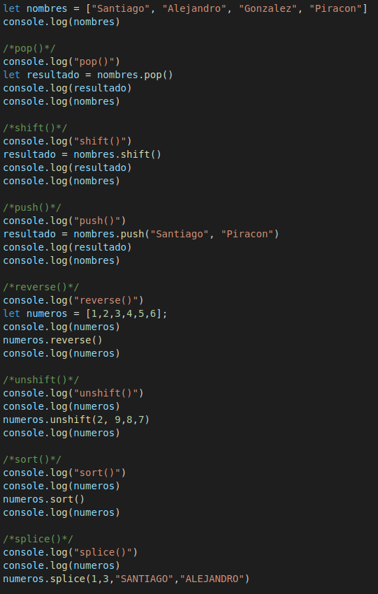

Lección 10 - Metodos Arrays
Definición: Los metodos de arrays son funcionalidades que son aplicadas a los arreglos.
Metodos:
- pop() array.pop() elimina el ultimo elemento de un array y lo devuelve.
- shift() array.shift() elimina el primer elemento del aray y lo devuelve.
- push() array.push() agrega elementos al final del array y devuelve la cantidad de elementos que contiene el array.
- reverse() array.reverse() invierte el arreglo.
- unshif() array.unshift() agrega elementos al inicio del array
- sort() array.sort() ordena el array en roden lexico grafico, es decir, ordena los numeros pero tambien ordena alfabeticamente
-
splice() array.splice() en el primer parametro se dede colocar la posición del elemento del array en el que queremos arrancar, luego
en el segundo parametro colocamos la cantidad de lementos que queremos eliminar a partir de dicha posición. Por ultimo tenemos el tercer
parametro que corresponde a los valores que queremos agregar desde esa misma posición, es como si fuera un reemplaso de elementos, se
eliminan unos y se agregan otros.
-
join() array.join() esta funciona convierte el array en string y permite dividir los elementos del array con cualquier valor que le
asignemos dentro de a funnción array.join(" - ")
- slice() array.slice() perite sustraer los elementos de un array desde una pisición inicial a una posición final. Sin incluir el ultimo.
- toString(), indexOf(), lastIndexOf(), includes() Los array tambien tiene algunas funciones de los string.
- filter() Es metodo que recibe una función como parametro, en donde envia cada uno de elementos del array a la función que tiene dentro.
- foreach() Funcion igual que filter(), la diferencia es que foreach es mas para recorrer el array sin condicionales.
